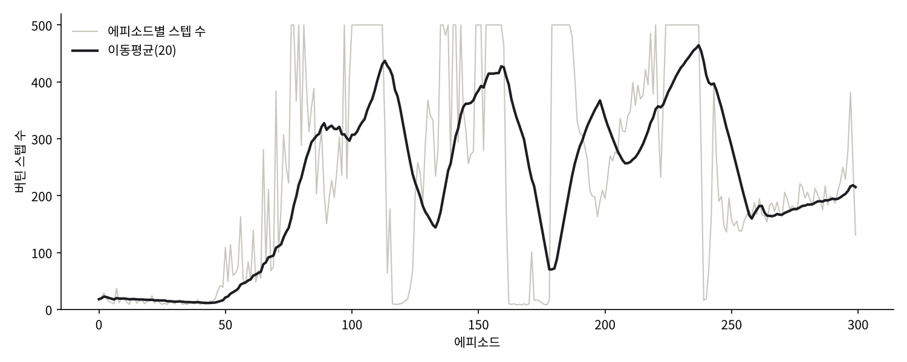

[강화학습 기초 6-2] 카트폴 DQN 코드 한 줄씩 읽기
카트폴 DQN 전체 코드를 함수별로 읽고, 최신 패키지에 맞춰 고친 부분과 실행 결과를 확인합니다.
강화학습 기초 시리즈 · 12편 중 12번째 글
연재 목차 보기
대표가 쓴 『개발자답게 코드로 익히는 강화학습』(프리렉, 2025)의 내용을 블로그에 맞게 정리해 연재합니다.
지난 편에서 본 세 장치를 코드로 옮깁니다. 책의 코드 구조(Agent 클래스와 함수 이름)는 살리고, 최신 패키지(Gymnasium, 텐서플로 2.21)에서 그대로 돌아가도록 다듬었습니다.
전체 코드
import random
from collections import deque
import gymnasium as gym
import numpy as np
import tensorflow as tf
from tensorflow.keras import layers
class Agent:
def __init__(self, episode_num=500):
# 환경
self.env = gym.make("CartPole-v1")
self.state_size = self.env.observation_space.shape[0] # 4
self.action_size = int(self.env.action_space.n) # 2
# 모델
self.node_num = 24
self.learning_rate = 0.001
self.model = self.build_model()
# 학습
self.discount_rate = 0.97
self.penalty = -100
self.episode_num = episode_num
# 리플레이 메모리
self.replay_memory = deque(maxlen=2048)
self.replay_size = 32
# 탐험 (입실론)
self.epsilon = 0.99
self.epsilon_decay = 0.2 # 전체 에피소드의 20% 지점에서 최솟값까지 줄어듦
self.epsilon_min = 0.05
# 모니터링
self.moving_avg_size = 20
self.count_list = []
self.moving_avg_list = []
def build_model(self):
model = tf.keras.Sequential([
layers.Input(shape=(self.state_size,)),
layers.Dense(self.node_num, activation="relu"),
layers.Dense(self.node_num, activation="relu"),
layers.Dense(self.action_size, activation="linear"),
])
model.compile(optimizer=tf.keras.optimizers.Adam(learning_rate=self.learning_rate),
loss="mse")
return model
def train(self):
for episode in range(self.episode_num):
state, _ = self.env.reset()
count = self.take_action_and_append_memory(episode, state)
self.count_list.append(count)
self.moving_avg_list.append(np.mean(self.count_list[-self.moving_avg_size:]))
if episode % 10 == 0:
print(f"episode:{episode}, count:{count}, moving_avg:{self.moving_avg_list[-1]:.1f}")
self.model.save("dqn_cartpole.keras")
def take_action_and_append_memory(self, episode, state):
epsilon = self.get_epsilon(episode)
count = 0
done = False
while not done:
count += 1
action = self.greed_search(epsilon, state)
state_next, reward, terminated, truncated, _ = self.env.step(action)
done = terminated or truncated
if terminated: # 막대가 쓰러졌을 때만 벌점
reward = self.penalty
self.replay_memory.append((state, action, reward, state_next, terminated))
self.train_mini_batch() # 한 스텝마다 미니배치 학습
state = state_next
return count
def train_mini_batch(self):
if len(self.replay_memory) < self.replay_size:
return
batch = random.sample(self.replay_memory, self.replay_size)
states = np.array([b[0] for b in batch])
actions = np.array([b[1] for b in batch])
rewards = np.array([b[2] for b in batch], dtype=np.float32)
next_states = np.array([b[3] for b in batch])
terminated = np.array([b[4] for b in batch], dtype=np.float32)
q = self.model(states, training=False).numpy() # 현재 상태의 Q값 (목표의 바탕)
q_next = self.model(next_states, training=False).numpy()
target = rewards + self.discount_rate * np.max(q_next, axis=1) * (1 - terminated)
q[np.arange(self.replay_size), actions] = target # 실제로 한 행동의 Q값만 바꿈
self.model.train_on_batch(states, q)
def get_epsilon(self, episode):
result = self.epsilon * (1 - episode / (self.episode_num * self.epsilon_decay))
return max(result, self.epsilon_min)
def greed_search(self, epsilon, state):
if np.random.rand() < epsilon:
return self.env.action_space.sample()
q = self.model(state[np.newaxis, :], training=False).numpy()
return int(np.argmax(q[0]))
if __name__ == "__main__":
agent = Agent()
agent.train()클래스 구성
| 함수 | 하는 일 |
|---|---|
| build_model | 상태 → 행동별 Q값 신경망을 만든다 |
| train | 에피소드를 반복하며 전체 학습을 이끈다 |
| take_action_and_append_memory | 한 에피소드 동안 행동하고, 경험을 메모리에 쌓고, 스텝마다 학습한다 |
| train_mini_batch | 메모리에서 무작위로 꺼낸 경험으로 신경망을 학습한다 |
| get_epsilon | 에피소드가 진행될수록 줄어드는 ε을 계산한다 |
| greed_search | ε에 따라 무작위 행동 또는 Q값이 가장 큰 행동을 고른다 |
설정값
| 변수 | 값 | 뜻 |
|---|---|---|
| discount_rate | 0.97 | 감가율 γ. 미래 보상을 얼마나 깎을지 |
| penalty | −100 | 막대가 쓰러졌을 때 주는 벌점. 카트폴은 기본으로 매 스텝 +1만 주므로, 실패를 분명히 알려 주려고 추가 |
| replay_memory | 최대 2,048개 | 경험 저장소. 넘치면 오래된 것부터 삭제 |
| replay_size | 32 | 한 번 학습할 때 꺼내는 경험 수(미니배치) |
| epsilon / decay / min | 0.99 / 0.2 / 0.05 | 전체 에피소드의 20% 지점까지 ε을 0.99에서 줄이고, 이후 0.05 유지 |
핵심: train_mini_batch
DQN의 학습은 이 함수에 다 들어 있습니다.
- 메모리에서 경험 32개를 무작위로 꺼냅니다.
- 현재 상태들의 Q값을 신경망으로 예측합니다. 이것을 목표의 바탕으로 씁니다.
- 다음 상태들의 Q값을 예측해 목표값 r + γ max Q(다음 상태)를 계산합니다. 막대가 쓰러진(terminated) 경우는 다음 상태가 없으므로 보상만 씁니다.
- 실제로 했던 행동 칸만 목표값으로 바꾸고, 나머지 행동 칸은 예측값 그대로 둡니다. 그래야 한 행동의 Q값만 고쳐집니다.
- 입력은 현재 상태, 정답은 바꾼 Q값으로 학습합니다.
책 코드에서 고친 부분
책의 원래 코드를 최신 환경에서 확인하면서 아래 부분을 고쳤습니다.
| 부분 | 원래 코드 | 고친 내용 |
|---|---|---|
| 패키지 | gym, env.step()이 값 4개 반환 | gymnasium. reset()은 (상태, 정보), step()은 5개를 반환하고 종료가 terminated / truncated로 나뉨 |
| 학습 입력 | 종료되지 않은 경험은 다음 상태가 입력으로 들어감 | 현재 상태를 입력으로 사용 |
| 목표의 바탕 | 에피소드 마지막 상태의 Q값 하나를 모든 경험에 같이 씀 | 경험마다 자기 상태의 Q값을 예측해서 사용 |
| 학습 시점 | 에피소드가 끝날 때 한 번 | 스텝마다 미니배치 학습(원 논문 방식에 가까움) |
| 벌점 | 500스텝을 채워 끝난 경우도 실패로 처리 | 막대가 쓰러진 경우(terminated)에만 벌점 |
| 기타 | Adam(lr=...), 입력 모양 (1, 4), 저장 경로 "./model/dqn" | Adam(learning_rate=...), 입력 모양 (4,), "dqn_cartpole.keras" |
실행 결과 보기
train()은 10 에피소드마다 이번 에피소드에서 버틴 스텝 수(count)와 최근 20 에피소드의 이동평균을 출력합니다. 이동평균이 우상향하면 학습이 되고 있는 것입니다. 그래프로 보려면 다음 코드를 씁니다.
import matplotlib.pyplot as plt
plt.figure(figsize=(10, 4))
plt.plot(agent.count_list, label="스텝 수")
plt.plot(agent.moving_avg_list, label="이동평균(20)")
plt.legend(loc="upper left")
plt.title("CartPole DQN")
plt.show()
처음 50 에피소드쯤은 ε이 커서 대부분 무작위로 움직이고, 10~20스텝 만에 막대가 쓰러집니다. 76번째 에피소드에서 처음으로 500스텝을 끝까지 버텼고, 300 에피소드 중 57번을 끝까지 버텼습니다. 다만 그래프처럼 잘하다가 갑자기 무너지는 구간이 반복됩니다. 학습 목표값을 계산하는 신경망과 학습 중인 신경망이 같아서 목표가 계속 흔들리기 때문입니다. 이 흔들림을 줄이는 장치가 앞에서 말한 타깃 네트워크입니다.
같은 설정으로 다시 돌려도 결과가 매번 조금씩 다릅니다. 무작위 행동, 무작위 샘플링, 신경망 초깃값이 모두 난수를 쓰기 때문입니다. 주사위도 몇 번 던져서는 1/6이 나오지 않듯, 강화학습도 에피소드를 충분히 늘려야 성능이 안정됩니다. 어느 정도 효과가 있는 설정을 찾았다면 에피소드 수를 늘려 학습해 보세요.
DQN은 초기 알고리즘이지만, 보상과 환경을 잘 설계하면 지금도 충분히 좋은 성능을 냅니다. 다음 연재에서는 정책을 직접 학습하는 정책기반 강화학습으로 넘어갑니다.